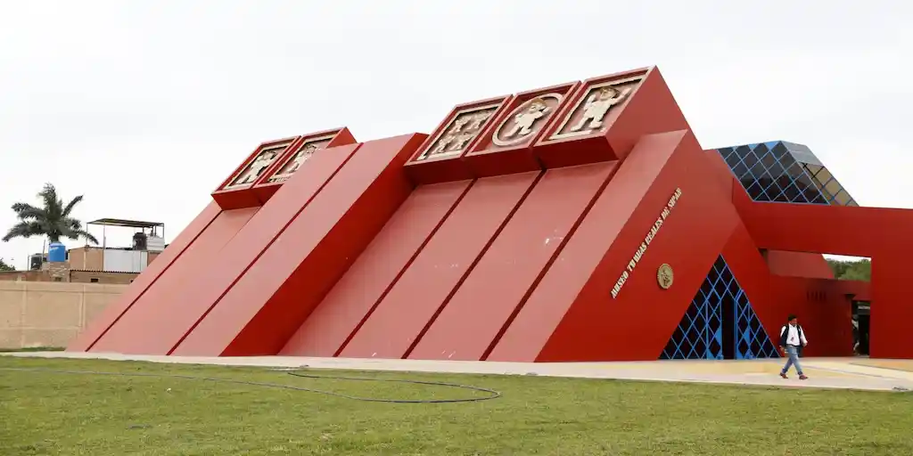

Featured Places
About Us
Explore Lambayeque is your guide to discovering one of Peru's most culturally rich regions. From ancient pyramids to beautiful beaches, we help you plan the perfect visit.
Available Tours
- Archaeological Tour — Visit Sipán, Túcume and Huaca Rajada. From $45
- Museum Tour — Explore the Brüning and Tumbas Reales museums. From $20
- Nature Tour — Discover Pómac Forest and Laquipampa Reserve. From $35
- Beach Tour — Relax at Pimentel and Santa Rosa beaches. From $15
Frequently Asked Questions
What are the most popular attractions in Lambayeque?
The Museo Tumbas Reales de Sipán and the Tucume pyramids are among the most visited sites.
What museums should I visit?
The Brüning and Tumbas Reales museums offer world-class archaeological collections.
What natural places can I explore?
Pómac Forest and Laquipampa Reserve offer incredible wildlife and landscapes.